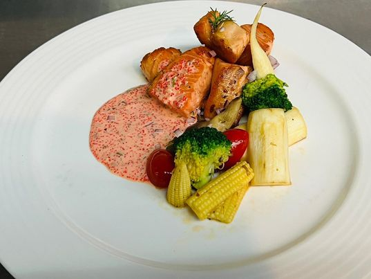
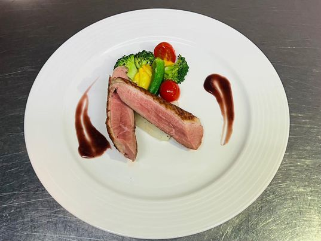
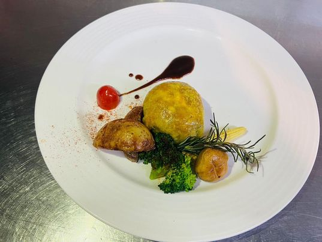
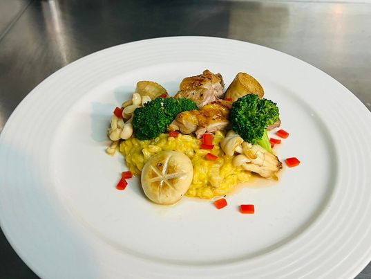

肉醬義大利麵
這是一道最基本且最容易做成功的一道菜，歡迎自行動手做看看。
肉醬義大利麵
這是一道最基本且最容易做成功的一道菜，歡迎自行動手做看看。各位來賓您好，歡迎至官方網站了解食譜，並且自己動手做看看唷
肉醬義大利麵
這是一道最基本且最容易做成功的一道菜，歡迎自行動手做看看。
 香煎鮭魚佐魚子醬 第二道食譜，如果你是一位鮭魚愛好者，那麼，你必須要動手做看看這道美食。
 香煎鴨胸佐紅酒醬 第三道食譜，這有點難度囉，必須了解鴨胸熟度，並且吃看看自己烹飪的肉質熟度。
 威靈頓羊排 第四道食譜，熱愛酥皮還熱愛羊排，千千萬萬別走開，酥皮與羊肉的組合真的是讚不絕口
 橙汁南瓜燉飯 第五道食譜，燉飯是大人小孩都愛，連老人都愛，飯的軟爛度還能自行掌握。可自行下載操作看看。